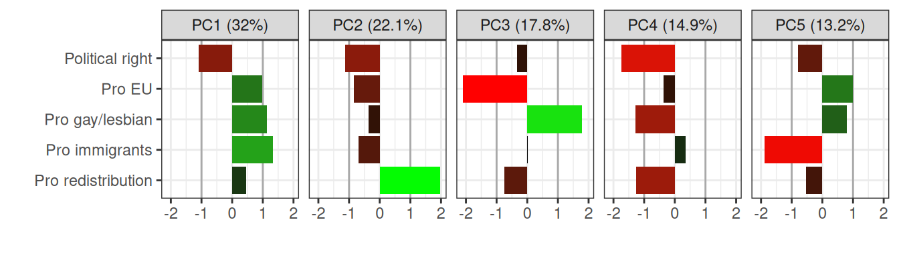

This research note shows that issue alignment (as a form of polarization) has almost unanimously increased in European countries from 2002 to 2023 with respect to five variables: left-right selfplacement and attitudes in favor or against of the EU, gays/lesbians, immigrants, and redistribution. This is quantified using principle component analysis of survey responses from the European Social Survey on these five variables for several years and countries. The PC structure is fairly constant over time and also does not vary a lot between different countries. Therefore, the percentage of the variance explained by the first principal components is taken as a proxy for issue aligment. Issue alignment has increased from 29.2% to 35.1%, however, the current level shows that the five issues are by far not fully aligned.
Code
library(tidyverse)library(gt)library(arrow)library(pals)library(patchwork)library(countrycode)normalize_pc <-function(value) -sign(value[3])*length(value)*value/sum(abs(value))formatpercentage <-function(x) paste0(round(100*x, digits =1), "%")ess <-read_parquet("ESS1-11.parquet")load("PCAs")attitudenames <-c("freehms", "gincdif", "lrscale", "impcntr", "euftf")attitudedesc <-c(#"Homosexual", "Equality", "Political Right", "Immigrants", "EU")"Pro gay/lesbian","Pro redistribution","Political right","Pro immigrants","Pro EU")# These are the countries which have data in all years coveredcntrynames <-c("BE","CH","DE","ES","FI","FR","GB","HU","IE","NL","NO","PL","PT","SE","SI")
1 Issue alignment
Issue alignment is one facet of polarization (Baldassarri and Gelman 2008) which is about how attitudes on different topic dimensions are alinged. It has also been called attitude consolidation. It means that over time, attitudes become increasingly predictive of each other. When attitudes become correlated, divisions between groups with different attitudes may feel deeper, even in the absence of any change in single-issue polarization on the macro-level. Contrary to single issue based polarization, attitude consolidation does find considerable empirical support (DellaPosta 2020) analyzing survey data from the United States of America using belief network analysis. Belief network analysis it is based on the correlation matrix of attitudes computed on survey data. Here, we use a related but arguably simple approach: principle component analysis (PCA).
PCA is a based on the eigendecomposition of the correlation matrix. The eigenvectors are the principle components and the corresponding eigenvalues1 represent the part of the total variance explained by the direction the corresponding eigenvector points to. That way the eigenvalues create a natural hierarchy of the principal components. That way, the percentage of total variance explained by the first principal component can serve as a measure of issue alignment. The more variance is explained by the first principle component, the more issues are aligned.
2 Data
We use five items from the European Social Survey which are conceptually unrelated: (1) Political selfplacement from left to right, (2) being in favor or against more European unification, (3) being in favor or against that gays and lesbians should live as they want, (4) being for many or few immigrants from poorer countries, and (5) if government should reduce income differences. Conceptually, all these attitudes are independent from each other.2Table 1 shows the overview of the five variables. Three items scales were reversed such that large numbers match the wording.
Table 1: Item overview from the European Social Survey (ESS)
Belief item
ESS name
Item description
ESS original scale
Political right
lrscale
Placement on left-right scale
0 = Left
10 = Right
Pro EU
euftf
European unification should go further or already gone too far
0 = already gone too far
10 = should go further
Pro gay/lesbian
freehms
Gays and lesbians should be free to live life as they wish
For a PCA we need data on all five items for each individual. After filtering for that, data is available for these 9 years: 2004, 2006, 2008, 2012, 2014, 2016, 2018, 2020, 2023. Further on, we want to make a better comparison over years. To that end we only include countries for which data is available for all these years. These were these 15 countries: Belgium (BE), Switzerland (CH), Germany (DE), Spain (ES), Finland (FI), France (FR), United Kingdom (GB), Hungary (HU), Ireland (IE), Netherlands (NL), Norway (NO), Poland (PL), Portugal (PT), Sweden (SE), Slovenia (SI). In total we have 212,387 individuals in the data set. Table 2 shows the number of individual per country and year.
3 Main Result: Increasing issue alignment
Figure 1 shows how issue alignment increased in almost all European countries for which enough data is available in the European Social survey. The particular structure and stability of the PCA analysis is analyzed in the next sections.
Figure 1: Increasing issue alignment measured as explained variance of the first principle componet of country-year specific PCAs based on five variables (Left-right selfplacement and attitude on EU, gay/lesbian, immigrants and redistribution) from the European Social Survey.
4 Principal Component Analyses
We compute one PCA for all countries and years, 9 PCAs for each year over all countries, and 234 PCAs for each country for each year. For visualization purposes we rescale the loadings of the original variables on the different PCs such that the left-right selfplacement is negative. That way, all other variables can be interpreted as being associated with being politically left. However, this only makes sense when the loading for selfplacement is not close to zero. Further on, we make the sum of the absolute values of loading equal to five.
Code
PC_plot <-function(data, title) data |>ggplot(aes(y = topic_desc |>fct_rev(), x = value, fill = value)) +geom_vline(xintercept =c(-1, 1), color ="darkgray") +geom_col() +scale_fill_gradient2(low ="red", mid ="black", high="green", midpoint =0, limits =c(-2,2), oob = scales::squish) +facet_wrap(~name, ncol =5) +labs(x ="",y="") +#, title = title) +guides(fill ="none") +theme_bw()ess_all |>PC_plot()

Figure 2: European Social Survey: PCA all years and countries
Figure 2 shows the five principal components for the the PCA of the whole data set and the corresponding percentage of the variance explained. PC1 explains 32% of the variance and characterizes a direction where being politically left is associated being in favor of all four other variables. It somehow captures a modern conceptualization of being left and right. PC2 explaining 22.1% of the total variance can be interpreted as a more traditional interpretation, where being left is strongly associated with being in favor of redistribution while there are slightly negative associations with the EU, and immigrants. PC3 distinguishes a direction where being pro gay/lesbian is associated with being against EU und against redistribution. We omit the interpretation of the last two PC’s which represent less than 30% of the total variance.
Figure 3 shows the results when PCA’s are computed independently for each year. Over all the PC structure remains remarkably stable. Notable changes in loadings are visible for PC2 and PC3. Increasing issue alignment is visble with the explained variance for PC1 increased from 29.2% to 35.1%.
Finally, Figure 4 shows that PC1 looks very similar for all countries in the dataset in 2023. A notable difference is that former socialist countries (Slovenia, Poland, and Hungary) have no association of left-right selfplacement and being pro or against redistribution. In Portugal the same is true for being pro or against the EU. In comparison, Switzerland (41.8%) and the United Kingdom (39.1%) shows the strongest issue alignment and Portugal (27.6%), Ireland (29.3%) and Slovenia (29.9%) the lowest.
Table 2: Number of individuals in dataset per year and country.
Country
2004
2006
2008
2012
2014
2016
2018
2020
2023
BE
1560
1704
1643
1769
1675
1681
1650
1245
1469
CH
1853
1604
1560
1329
1341
1343
1306
1327
1198
DE
2442
2462
2402
2725
2835
2673
2203
7727
2205
ES
1223
1469
1815
1569
1399
1416
1220
2010
1550
FI
1870
1769
2035
2026
1934
1813
1625
1454
1457
FR
1611
1809
1878
1801
1731
1835
1706
1608
1438
GB
1595
1980
2021
1696
1914
1654
1886
1018
1213
HU
986
946
974
1298
1187
1137
1230
1431
1713
IE
1715
1358
1578
2014
1714
2092
1773
1357
1561
NL
1714
1728
1651
1713
1764
1513
1488
1343
1561
NO
1668
1648
1459
1525
1330
1412
1231
1295
1189
PL
1239
1281
1224
1415
1166
1252
1101
1914
1166
PT
1094
1230
1242
1151
990
1060
855
1194
969
SE
1701
1653
1634
1646
1599
1357
1395
2141
1136
SI
925
947
916
737
815
1000
996
1008
963
References
Baldassarri, Delia, and Andrew Gelman. 2008. “Partisans Without Constraint: Political Polarization and Trends in American Public Opinion.”American Journal of Sociology 114 (2): 408–46. https://doi.org/10.1086/590649.
DellaPosta, Daniel. 2020. “Pluralistic Collapse: The ‘Oil Spill’ Model of Mass Opinion Polarization.”American Sociological Review 85 (3): 507–36. https://doi.org/10.1177/0003122420922989.
Footnotes
All eigenvalues are non-negative because the correlation matrix is symmetric.↩︎
A left-wing position is traditionally conceptually associated with a preference for reduction of income differences and a right-wing position with a preference against it. Interestingly, it turns out that this association is the lowest on the strongest principal component. Therefore, we can consider it also conceptually independent in modern times.↩︎
![]()